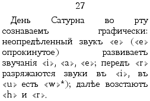
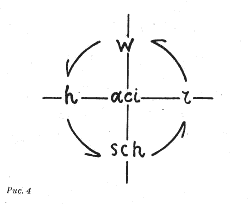
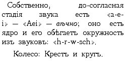
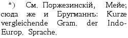

Glossolalia (Section 27)

We are conscious of Saturn's Day in the mouth graphically: the indeterminate sound "e" ("e" inverted) develops the sounds "i," "a," "e"; before an "r" the sounds relax into "i" and into "u" which is the "w"*; further the "h" and the "r" arise.


In actuality, the pre-consonant stage of sound is "a-e-i" -- "Aei" is -- aeternally; it is the nucleus and the circumference of sounds runs around it; "h-r-w-sch."
The Wheel: the Cross and circle. [Koleso: Krest i krug.]

* Cf. Porzezinski, Meillet; also Brugmann, Kurze vergleichende Gram. der Indo-Euro. Sprache.